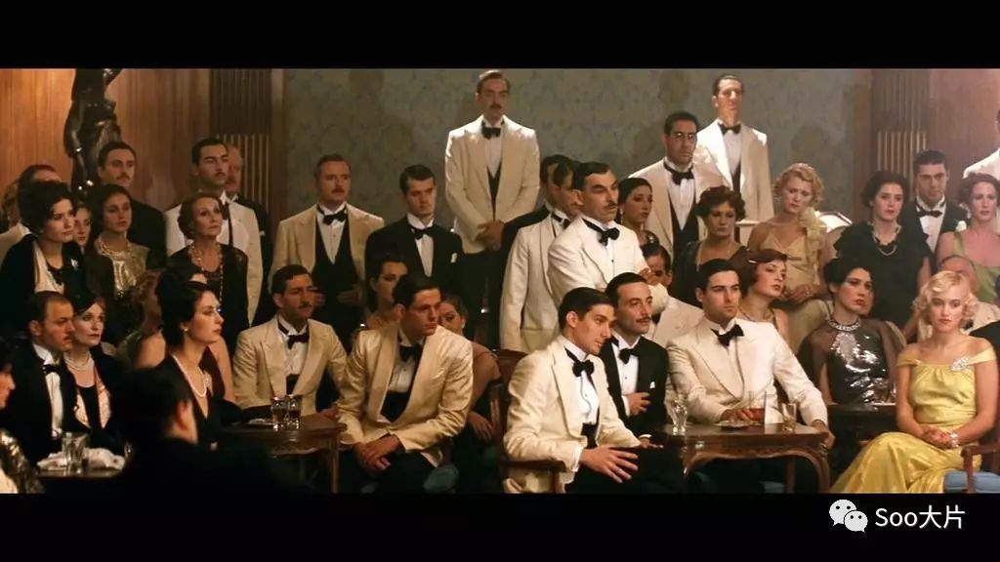
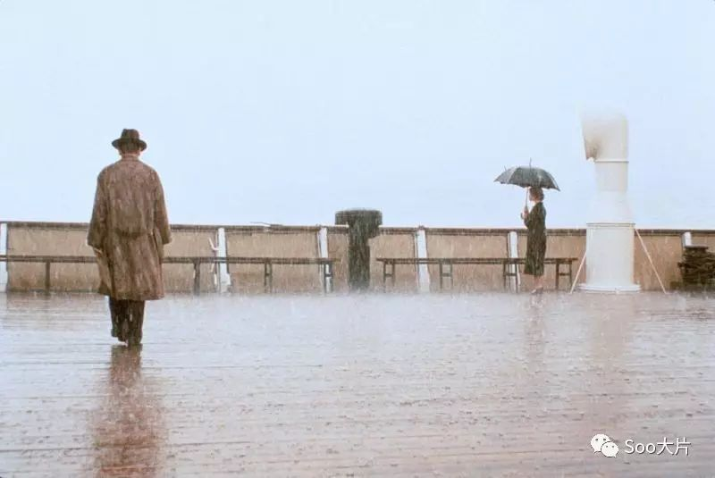
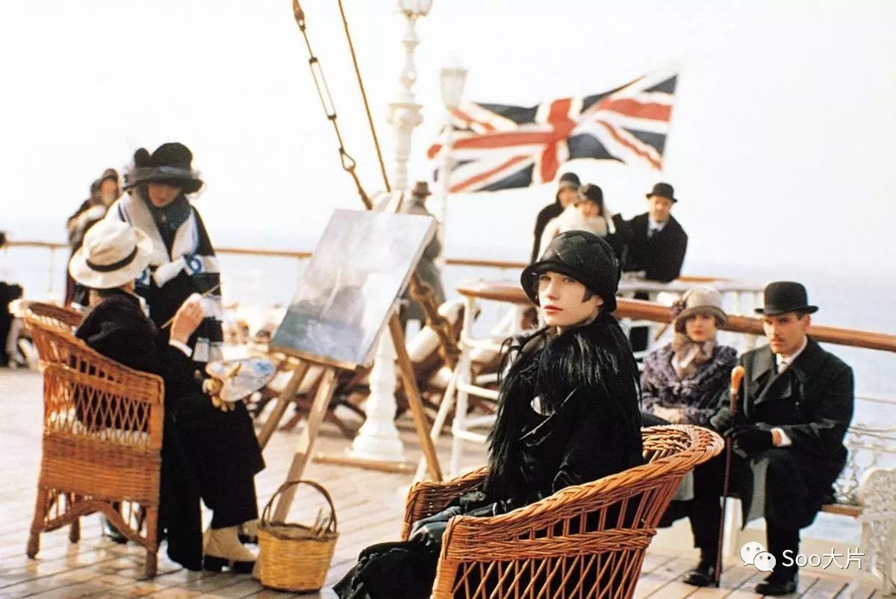
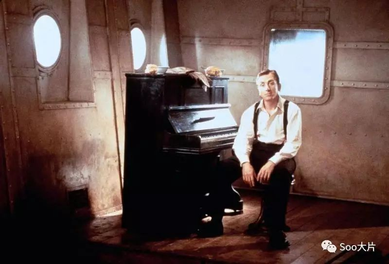
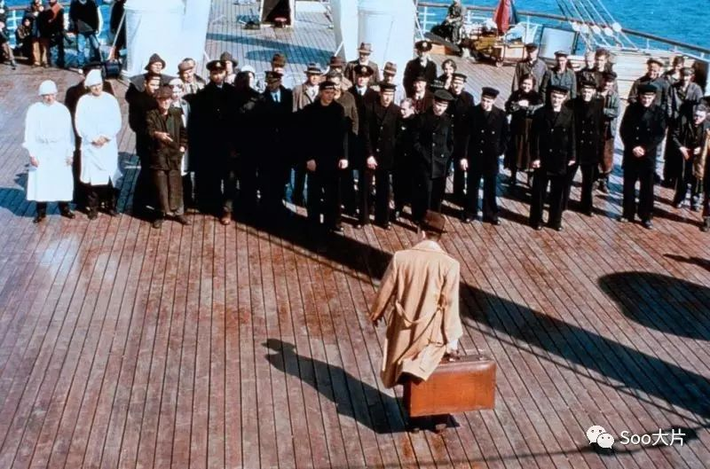

第11期：S君的高分电影《海上钢琴师》
陆上的人喜欢寻根究底，虚度很多的光阴。冬天忧虑夏天的迟来，夏天担心冬天的将至。所以你们不停到处去追求一个遥不可及、四季如夏的地方，我并不羡慕。
有些电影是你看过之后，心中涌动万千却无从下笔，是你满脑子的思绪却不知从何整理。
S君写这部电影影评的时候就有这样的感觉！
这部电影在豆瓣上的评分高达9.2分，在豆瓣所有电影评分里面排名第11位。
但是，尽管这么高的评分，差评的人还是有很多，大多数都是说的本片有点不伦不类，哗众取宠等等等等。
但是在S君看来，《海上钢琴师》真正拍出了相当高的水平。
进入正题，S君就先来讲讲电影的故事吧。【汁源】回复“高分电影”，你懂的！
《海上钢琴师》讲述的一个钢琴天才传奇的一生。
1900年，Virginian号豪华邮轮上，一个孤儿被遗弃在头等舱，由船上的水手抚养长大，取名1900（蒂姆•罗斯饰）。

1900慢慢长大，显示出了无师自通的非凡钢琴天赋，在船上的乐队表演钢琴，每个听过他演奏的人，都被深深打动。爵士乐鼻祖杰尼听说了1900的高超技艺，专门上船和他比赛，最后自叹弗如，黯然离去。
可惜，这一切的事情都发生在海上，1900从来不愿踏上陆地，直到有一天，他爱上了一个女孩，情愫在琴键上流淌。
他会不会为了爱情，踏上陆地开始新的生活，用他的琴声惊艳世界？他将怎样谱写自己非凡的人生？
在看电影的时候，很多人（包括S君）都以为最后会是一个大圆满的结局，1900回到了陆地，爱情事业大圆满，但是电影总是与你的想法相反。

在豆瓣上，这部电影的排名这么高，但是在IMDB上面这部电影的排名就靠后了。
S君觉得，这也和美国精神就是自由与梦想有关，而钢琴师这个人物完全背道而驰，害怕改变，没有希望，能得到这个分数已经算是不错了，看完后很多人觉得这人完全就是个悲剧。

但是硬要说这个人物是悲剧，这个人没有一点自由与梦想的想法，S君觉得这个也是错的。
记不得是谁说过这样一句话：一个人在一个方面是天才，那他在另外一方面肯定是个蠢材。

S君很认同这句话，纵观世界，哪一个天才是全方面的，人无完人。但是另一方面是蠢材，这个是有点夸张的说法。
《海上钢琴师》的主人翁难道不想自由？难道不想追求自己的爱情？那是他没有办法。

有人说这不是很简单的事情吗？打包好行李走下船就是了，就像电影中那个场景一样。
但是不要忘了，1900在音乐方面的天赋来源于他对人和声音的理解，就像电影其中一个场景，他能够看到一个人，脑海里已经就演奏出与之相对应的音乐。

所以，如果1900来到了陆地上，这么多的人，这么多的事物，这么多各种繁杂的声音，他是承受不了的。
也正如影片中说的那样：阻止了我的脚步的，并不是我所看见的东西，而是我所无法看见的那些东西。你明白么？我看不见的那些。在那个无限蔓延的城市里，什么东西都有，可惟独没有尽头。
好了，今天S君就讲到这儿，喜欢电影的可以去看看！【汁源】回复“高分电影”，你懂的！
（完，S君）
Soo大片
长按识别二维码，关注互动